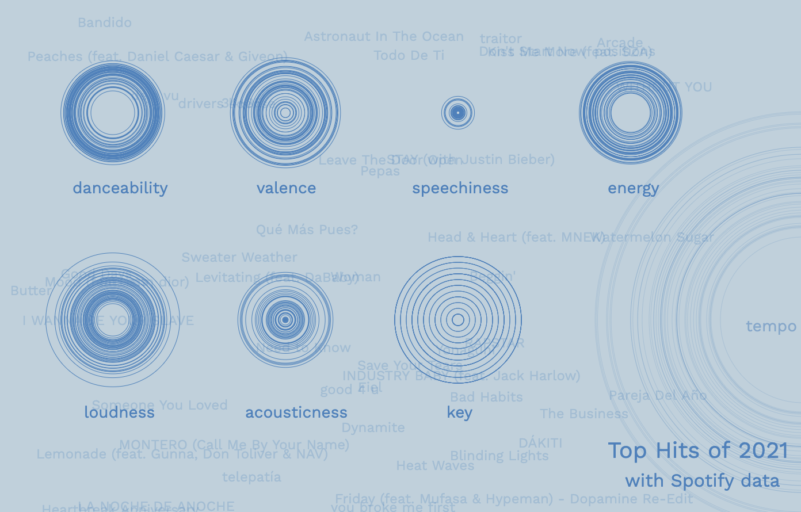

data visualization
This Fall, I took a class called CS 396: Generative Methods. One of my projects was doing a data visualization using HTML, CSS and JavaScript P5 (Processing). I visualized the Top Hits of 2021 using Spotify's song metrics, such as danceability and valence (the cheeriness of a song). For more information on the song metrics, check out this Towards Data Science article. I found the data from a Kaggle dataset that used Spotify's API to get the Top Hits data.
You can check the link out here: https://astrologica-a7.glitch.me/
(the visualization only works on Chrome)
